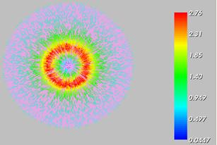
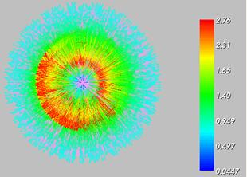
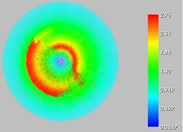
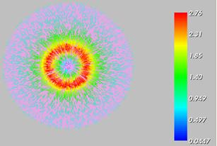
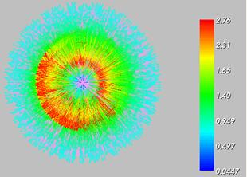
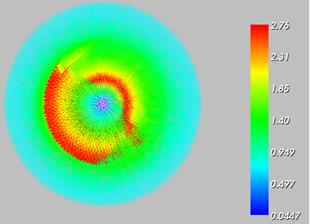
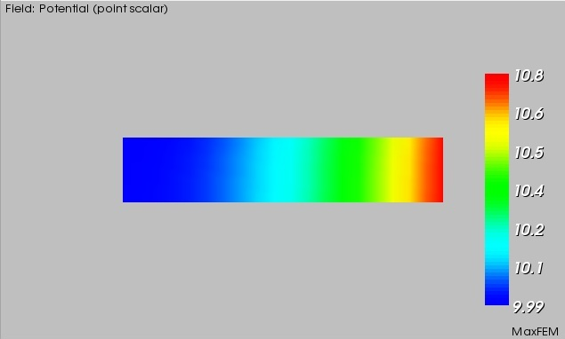
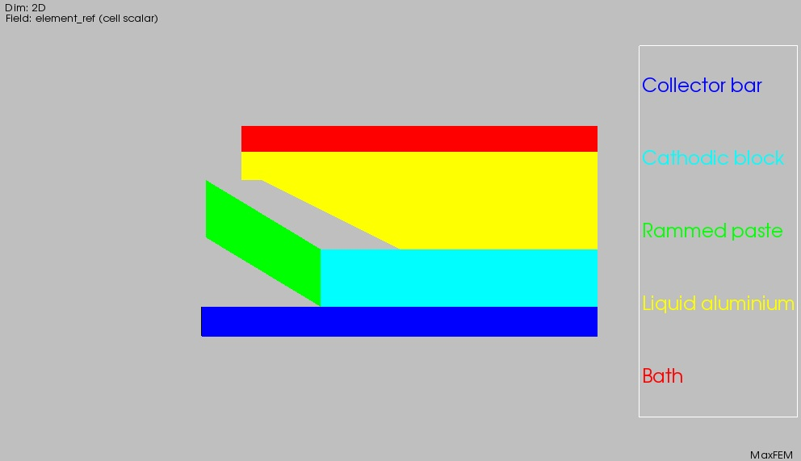

| Scale: 0.07 ;Density: 50% | Scale: 0.07 ;Density: 100% |
|  |  |
| Scale: 0.3 ;Density: 50% | Scale: 0.3 ;Density: 100% |
|  |  |
The MaxFEM Direct Current2D application numerically solves direct current bidimensional problems in Cartesian coordinates. You can find extensive information about the Direct Current mathematical model in the MaxFEM Models user guide.
The admissible options both in the 2D and 3D cases are summarized in the table below.
| Material properties(σ) | 2D | 3D |
| Linear and isotropic | Yes | Yes |
| Linear and orthotropic | Yes | Yes |
For the numerical approximation of Direct Current problems, MaxFEM uses Lagrange finite elements of order one to compute the electric potential V. Thus the electric field is approximated by piecewise functions in each element of the mesh (triangles in 2D and tetrahedra in 3D).
To use the Direct current application the user needs:
To provide a finite element mesh of the domain: menu Mesh.
To impose the boundary conditions on the boundaries: menu Boundary Conditions.
To assign materials to the different components of the domain: menu Properties. Materials must be previously selected and/or defined in the Materials database.
To solve the problem in direct or remote mode: menu Solver/Run or Solver/Run remote, respectively. The user can stop the computation before it is completed in the label Solver/Stop.
Once the problem has been solved, several quantities and fields based on the potential can be computed. It is also possible to create displays of the results: menu Visualization.
All the previous steps are described in the items below
MaxFEM does not include a mesh generator tool so the user must provide his own meshes. In the Direct current application, mesh files can be in unv or mfm format (see section MaxFEM mesh files for a complete description of the mesh formats). MaxFEM allows P1 Lagrange triangular finite elements for 2D problems and P1 Lagrange tetrahedral finite elements in the 3D case. Mesh may be loaded from the Mesh menu by choosing
Mesh → Open → Choose mesh file → name.unv
Preferably, mesh file must be in unv format, but mfm format is also allowed.
In the menu Properties the user can assign a material to the different parts of the computational domain.
First, you must select the number assigned to the surface reference in the mesh (1, for instance)
Properties → Materials → Choose surface references → 1
Then, you select the material (copper, for instance)
Properties → Materials → Choose material → copper
Boundary conditions is a menu entry to define boundary conditions and attach them to boundaries. Direct Current application considers two types of boundary conditions.
In this case, the value VD of the electrostatic potential on the boundary ΓD must be given. To do that, you need:
Define the boundary condition (for instance, blocking_1)
Boundary conditions → Dirichlet: electric scalar potential, V (V) → blocking_1 → Add
Define the boundary condition via a constant or a precompiled function
Dirichlet conditions: blocking_1
The condition is given by: A constant or a function
Assign the boundary condition to the corresponding boundary reference(s). For instance:
The condition is given by → A constant → Line references → 1 2 4
If VD takes a constant value, define this value:
The condition is given by: A constant → Constant value → 0.10
If VD is a precompiled function, select "Function defined by user":
The condition is given by: A function → Function name → Function defined by user
In this case, the user must edit the file modulos_electros.f90 of the folder $INSTALLDIR/sources/direct_current_2D/ of the installing directory and define his own function in the line 307 of the module bloqueo, just after the sentence
if (trim(adjustl(DirBC_Func)) == 'Function defined by user') then
! Dirichlet Boundary Condition defined as a function by User
! Please modify the code below in case you want to provide your own
! function to compute Dirichlet boundary condition
Then, you must recompilate the solver before running it.
There are two Neumann boundary conditions available: inward current flow and inward current intensity.
Inward current flow
In this case, the value -J·n of the inward current density at the boundary ∂ΩN must be given. To do that, you need to follow the same steps as for the Dirichlet conditions but selecting
Boundary conditions → Neumann: inward current flow, -J·n (A/m2)
If the user defines -J.n as a precompiled function, select "Function defined by user" as follows:
The condition is given by: A function → Function name → Function defined by user
In this case, the user must edit the file modulos_electros.f90 of the folder $INSTALLDIR/sources/direct_current_2D/ of the installing directory and define his own function in the line 366 of the module neumann, just after the sentence
if (trim(adjustl(NeuBC_Func)) == 'User_Defined') then
! Neumann Boundary Condition defined as a function by User
! Please modify the code below in case you want to provide your own
! function to compute Neumann boundary condition
Then, you must recompilate the solver before running it.
Inward current intensity
In this case, the value I of the inward current intensity at the boundary ∂ΩN must be given. To do that, you need to follow the following steps:
Define the boundary condition (for instance, blocking_1)
Boundary conditions → Neumann: inward current intensity, I (A) → blocking_1 → Add
Assign the boundary condition to the corresponding boundary reference(s). For instance:
Line references → 1 2 4
Define the value for the intensity:
Constant value → 0.10
Define the thickness of the domain in the z-direction:
Thickness → 1
If a physical quantity describing a material is temperature dependent, the user must select this option in the item Data of the menu bar:
Data→Temperature field for materials T (ºC)
A dialog box appears where the file name which contains the temperature must be given
Choose temperature field: Temperature.mff
The field must be written in mff format file and it contains a value for each degree of freedom of the mesh.
From the resolution of the direct current problem, appropriate derived quantities can be computed. The post-processing quantities available in the MaxFEM direct current application are summarized in the tables below.
| Symbol | Magnitude | Type | Unit |
| V | Electrostatic potential | S | V |
| E | Electric field intensity | V | V/m |
| J | Current density | V | A/m2 |
| T | Temperature | S | ºC |
Direct current application postprocessing quantities
S: Scalar quantity, V: vectorial quantity
MaxFEM provides a set tools for postprocessing and visualization which are available through the item Visualization of the menu bar. The options and their characteristics are summarized in the table below.
| Item | Visualization options | Description |
Mesh |
Triangulation | Represents the mesh of the domain. |
| Surface references | Displays subdomains reference number. | |
| Line references | Displays lines reference number. | |
| Point references | Displays points reference number. | |
| Element numbering | Displays elements reference number. | |
| Vertex numbering | Displays the number of a vertex previously chosen with the mouse. | |
| Materials | Displays the name of the material assigned to a subdomain. | |
Temperature field T, Potential V |
Filled | Displays the field distribution on the domain. |
| Threshold | Extracts the cells that fall between a given lower and upper thresholds of the field. | |
| Isolines | Displays the curves along which the field has a constant value. A set of scalar values can be specified to extract more than one isoline at a time. | |
| 3D plot | Displays a three-dimensional plot of the field over the domain. | |
| Plot over line | Cuts a 3D data object with a plane. An interactive widget can be used for placing the plane in the appropriated place. | |
Electric field E |
Vectors | Displays the vector field E. |
| Vectors components | Displays the component of the vector field E. | |
Current density J |
Vectors | Displays the vector field J. |
| Vectors components | Displays the components of the vector field J. | |
| Close all | --- | Close all the windows containing visualization results. |
The user can modify the arrows size by using the parameter Scale in the dialog box:
Electric field → Vectors → Choose options for arrows → Scale
It is also possible to modify the number of vectors in the plot by using the parameter Density in the dialog box:
Electric field → Vectors → Choose options for arrows → Density
| Scale: 0.07 ;Density: 50% | Scale: 0.07 ;Density: 100% |
|  | |
| Scale: 0.3 ;Density: 50% | Scale: 0.3 ;Density: 100% |
|  |  |
It is also possible to plot the components of the vectorial magnitude . For instance, in order to plot the first component of the electric field:
Electric field →Vectors components → Choose a component → 1st component
The goal of this section is to familiarize the user with the MaxFEM Direct Current application by using simple examples. These examples contain the general steps and all the data needed to describe the physics and solve the given cases.
The following examples can be found:
In this example, the electrostatic potential V generated in the rectangle [0,0.5] x [0,0.1] by a potential drop at its horizontal edges is computed.
The solution is given by
| (1) |
The material of the rectangle was previously defined in the Materials database as Test material 4. Its electrical conductivity is given by σx,x=2 S.m-1 and σy,y=6 S.m-1 for this orthotropic case.
The boundary conditions are given as follows:
Dirichlet Boundary Condition on the top and botton edge boundaries.
Neumann Boundary Condition on the left and right edge boundaries.
Once MaxFEM is open, the user must select the application Direct Current 2D from the Project of the menu bar.
Project → Applications→ Direct current 2D
Remember that before start to work with a particular application, the user must choose a working directory.
Then, from the item Project item of the Menu bar, select
Project → Sample Data→ Example 1: Orthotropic case
The computational domain is the rectangle [0, 0.5] x [0, 0.1]. The user must upload the mesh malla3.mfm from the Mesh item of the menu bar .
Mesh → Open → Choose mesh file → malla3.mfm
The user can display the mesh of the computational domain by choosing the option Visualization → Mesh of the Menu bar. If not, the computational domain will be displayed when selecting any item from the menu bar. After we have introduced the mesh, we start to go through the menu bar from the left to right choosing the different options related to the whole simulation.
The material considered in this example is the so-called Test material 4 and their properties have been previously defined in the materials database of the interface. To assign this material to the computational domain, the user must:
Select the item Properties → Materials of the Menu bar.
In the Choose domain references dialog box, select the reference 1.
The user can display the different properties of this material in Materials database item of the menu bar. To do that,
Select the option Materials database → Open
A dialog box appears where the different materials are displayed. Select Test material 4.
A new dialog box appears where the different electromagnetic magnitudes are displayed. Click on the property of your interest, for instance, Electrical conductivity.
Choose A constant in the box below and then Orthotropic in the Behavior box.
Click on X value and Y value to introduce the values of the electrical conductivity, in this example, 2 and 6, respectively.
Now we are going to impose the boundary conditions. A Dirichlet boundary condition is imposed in boundaries 1 and 2 introduced as a predefined function determined by the expression (1). In order to impose this boundary condition the user must:
Select the option Boundary conditions → Dirichlet: electric scalar potential in the menu bar.
Click on Condition 1 on the Dirichlet conditions dialog box.
In the dialog box The condition is given by, select the option A function
Click on Line reference. By default, numbers 1 and 2 associated to this reference are displayed in the box below.
Click on Function name and choose Example_1.
Select the option Boundary conditions → Neumann: inward current flow, -J·n (A/m2) in the menu bar.
Click on Condition 2 on the Neumann conditions dialog box.
In the dialog box The condition is given by, select the option A constant
Click on Line reference. By default, number 3 associated to this reference is displayed in the box below.
Click on Constant value and write 6.
Select the option Boundary conditions →Neumann: inward current flow, -J·n (A/m2) in the menu bar.
Click on Condition 3 on the Neumann conditions dialog box.
In the dialog box The condition is given by, select the option A constant.
Click on Line reference. By default, number 4 associated to this reference is displayed in the box below.
Click on Constant value and write 0.
Select the item Run (or Run remote depending on your preference) of the menu bar to proceed with the resolution of the problem.
Select the item Visualization of the menu bar to display the results. For instance, to display the electric potential, proceed as follows
Click on the option Potential to display the potential. A dialog box appears where the user can choose the field representation.
Choose the option Filled to display the potential in the domain.
Visualization → Potential → Filled

Figure 1: Electric potential.
Choose the option Plot over line to display the field along a line. The user can introduce the first and second point coordinates in the Extreme point coordinates dialog box.
Figure 2: Plot over line of the electric potential.
To display the electric field, choose the option Visualization → Electric field of the menu bar. Select the option Vectors of the dialog box and then state the values for the scale and density of the arrows on the boxes below. For this picture, the scale is 0.009 and the density is 100.
Figure 3: Electric field.
Select the option Vector components to represent the components of the electric field or its modulus. Notice that in the visualization window the user can adjust the scale range.
Figure 4: First component of the electric field.
In this example, the electrostatic potential V generated in the rectangle [0,0.5] x [0,0.1] by a potential drop at its vertical edges is computed. The solution is given by
| (2) |
The material of the rectangle was previously defined in the Materials database as Test material 1. Its electrical conductivity depends on temperature and it is given by σ=2T where
| (3) |
The boundary conditions are given as follows:
Dirichlet Boundary Condition on the left and right edge boundaries.
Neumann Boundary Condition on the top and bottom edge boundaries.
Once MaxFEM is open, the user must select the application Direct Current 2D from the Project of the menu bar.
Project → Applications→ Direct current 2D
Remember that before start to work with a particular application, the user must choose a working directory.
Then, from the Project item of the Menu bar, select
Project → Sample Data→ Example 2: Temperature depending properties
The computational domain is the rectangle [0, 0.5] x [0, 0.1]. The user must upload the mesh malla4.mfm from the Mesh item of the menu bar .
Mesh → Open → Choose mesh file → malla4.mfm
The user can display the mesh of the computational domain by choosing the option Visualization → Mesh of the Menu bar. If not, the computational domain will be displayed when selecting any item from the menu bar. After we have the mesh, we start to go through the menu bar from the left to right choosing the different options related to the whole simulation.
The material considered in this example is the so-called Test material 1 and their properties have been previously defined in the materials database of the interface. To assign this material to the computational domain, the user must:
Select the item Properties → Materials of the Menu bar.
In the Choose surface references dialog box, select the reference 1.
The user can display the different properties of this material in Materials database item of the menu bar. To do that,
Select the option Materials database → Open
A dialog box appears where the different materials are displayed. Select Test material 1.
A new dialog box appears where the different electromagnetic magnitudes are displayed. Click on the property of your interest, for instance, Electrical conductivity.
Choose A temperature dependant table in the box below and then isotropic in the Behavior box.
Click on Temperatures and Values to introduce the values of the electrical conductivity with respect to the temperature, in this example, 10 20 and 20 40, respectively.
Now we are going to impose the boundary conditions. A Dirichlet boundary condition is imposed in boundaries 3 and 4 introduced as a predefined function determined by the expression (2). In order to impose this boundary condition, the user must:
Select the option Boundary conditions → Dirichlet electric scalar potential in the menu bar.
Click on Condition 1 on the Dirichlet conditions dialog box.
In the dialog box The condition is given by, select the option A function
Click on Line reference. By default, numbers 3 and 4 associated to this reference are displayed in the box below.
Click on Function name and choose Example_2.
Select the option Boundary conditions → Neumann: inward current flow, -J·n (A/m2) in the menu bar.
Click on Condition 2 on the Neumann conditions dialog box.
In the dialog box The condition is given by, select the option A function
Click on Line reference. By default, numbers 1 and 2 associated to this reference are displayed in the box below.
Click on Function name and assign Example_2.
The item Data of the menu bar allows to introduce different data depending on the application. In direct current, the option allows to introduce the temperature filed. In this example, a file named teta.malla4.vtu has been included containing the temperature on every node of the mesh, according with the expression (2). To upload this file the user must
Select Data → Temperature field for materials in the menu bar.
The dialog box Choose temperature field appears. By default, the file teta.mff is displayed and automatically loaded. In the general case, you must click on the explore directory button and select the corresponding file.
Select the item Run (or Run remote depending on your preference) of the menu bar to proceed with the resolution of the problem.
Select the Visualization item of the menu bar to display the results. For instance, to display the electric potential, proceed as follows
Click on the option Potential to display the potential. A dialog box appears where the user can choose the field representation.
Choose the option Filled to display the potential in the domain.
Visualization → Potential → Filled
Figure 1: Electric potential.
Choose the option 3D Plot to display a 3D representation of the potential over the computational domain with scale in Z axis equals to 1.
Figure 2: 3D Plot of the electric potential.
Choose the option Plot over line to display the field along line.
Figure 3: Plot over line of the electric potential.
To display the electric field, choose the option Visualization → Electric field of the menu bar. Select the option Vectors of the dialog box and then state the values for the scale and density of the arrows on the boxes below. For this picture, the scale is 0.007 and the density is 100.
Figure 4: Electric field.
Select the option Vector components to represent the components of the electric field or its modulus. Notice that in the visualization window the user can adjust the scale range.
Figure 5: Second component of the electric field.
In this example, the electrostatic potential V generated in the rectangle [0,0.5] x [0,0.1] by a current intensity at its vertical right edge is computed. The material was previously defined in the Materials database as Test material 4. Its electrical conductivity is given by σx,x=2 S.m-1 and by σy,y=6 S.m-1.
The boundary conditions are given as follows:
Dirichlet Boundary Condition on the left vertical boundary.
Neumann Boundary Condition on the top and bottom edge boundaries.
Current intensity on the right vertical boundary.
| (4) |
Note: In general, no source term is considered in Direct current 2D, that is to say, f(x,y)= 0. Even though no entry for the Direct current 2D source term is considered at the interphace, the user can change this source term just editing the file funciones.f90 of the folder $INSTALLDIR/sources/direct_current_2D/ of the installing directory and define his own function at the line 13. Then, the user must recompilate the solver before running it.
Once MaxFEM is open, the user must select the application Direct Current 2D from the Project of the menu bar.
Project → Applications→ Direct current 2D
Remember that before start to work with a particular application, the user must choose a working directory.
Then, from the item Project of the Menu bar, select
Project → Sample Data→ Example 3: Current intensity case
The computational domain is the rectangle [0, 0.5] x [0, 0.1]. The user must upload the mesh malla4.mfm from the Mesh item of the menu bar .
Mesh → Open → Choose mesh file → malla4.mfm
The user can display the mesh of the computational domain by choosing the option Visualization → Mesh of the Menu bar. If not, the computational domain will be displayed when selecting any item from the menu bar. After we have the mesh, we start to go through the menu bar from the left to right and we choose the different options related to the whole simulation.
The material considered in this example is the so-called Test material 4 and their properties have been previously defined in the materials database of the interface. To assign this material to the computational domain, the user must:
Select the item Properties → Materials of the Menu bar.
In the Choose domain references dialog box, select the reference 1.
The user can display the different properties of this material in Materials database item of the menu bar. To do that,
Select the option Materials database → Open
A dialog box appears where the different materials are displayed. Select Test material 4.
A new dialog box appears where the different electromagnetic magnitudes are displayed. Click on the property of your interest, for instance, Electrical conductivity.
Choose A constant in the box below and then Orthotropic in the Behavior box.
Click on X value and Y value to introduce the values of the electrical conductivity, in this example, 2 and 6, respectively.
Now we are going to impose the boundary conditions. A Dirichlet boundary condition is imposed in boundaries 1 and 2 introduced as a predefined function determined by the expression (4). In order to impose this boundary condition, the user must:
Select the option Boundary conditions → Dirichlet: electric scalar potential in the menu bar.
Click on Condition 1 on the Dirichlet conditions dialog box.
In the dialog box The condition is given by, select the option A function
Click on Line reference. By default, number 4 associated to this reference is displayed in the box below.
Click on Function name and choose Example_3.
Select the option Boundary conditions → Neumann: inward current flow, -J·n (A/m2) in the menu bar.
Click on Condition 2 on the Neumann conditions dialog box.
In the dialog box The condition is given by, select the option A constant
Click on Line reference. By default, numbers 1 and 2 associated to this reference are displayed in the box below.
Click on Constant value and write 0.
Select the option Boundary conditions → Neumann: inward current intensity, I (A) in the menu bar.
Click on Condition 3 on the Neumann conditions dialog box.
In the dialog box The condition is given by, select the option A constant.
Click on Line reference. By default, number 3 associated to this reference is displayed in the box below.
Click on Constant value and write 0.6 and on Thickness to write 1.
Select the item Run (or Run remote depending on your preference) of the menu bar to proceed with the resolution of the problem.
Select the item Visualization of the menu bar to display the results. For instance, to display the electric potential, proceed as follows
Click on the option Potential to display the potential. A dialog box appears where the user can choose the field representation.
Choose the option Filled to display the potential in the domain.
Visualization → Potential → Filled
Figure 1: Electric potential.
Choose the option 3D Plot to display a 3D representation of the potential over the computational domain with scale in Z axis equals to 1.
Figure 2: 3D Plot of the electric potential.
Choose the option Plot over line to display the field along a line.
Figure 3: Plot over line of the electric potential.
To display the electric field, choose the option Visualization → Electric field of the menu bar. Select the option Vectors of the dialog box and then state the values for the scale and density of the arrows on the boxes below. For this picture, the scale is 0.008 and the density is 100.
Figure 4: Electric field.
Select the option Vector components to represent the components of the electric field or its modulus. Notice that in the visualization window the user can adjust the scale range.

Figure 5: First component of the electric field.
In this example, the electrostatic potential V generated in an electrolytic cell by a current intensity at its cathodic bar is computed. The materials were previously defined in the Materials database as collector bar, cathodic block, rammed paste, liquid aluminium and bath as the following figure depicts.

Figure 1: Materials of the cell.
The boundary conditions are given as follows:
Homogeneous Dirichlet Boundary Condition on the top boundary.
Current intensity on its cathodic bar.
Homogeneous Neumann Boundary Condition on the other boundaries.
Once MaxFEM is open, the user must select the application Direct Current 2D from the Project of the menu bar.
Project → Applications→ Direct current 2D
Remember that before start to work with a particular application, the user must choose a working directory.
Then, from the item Project of the Menu bar, select
Project → Sample Data→ Example 4: Electrolytic cell
The computational domain is depicted in the previous figure. The user must upload the mesh malla_cuba.mfm from the Mesh item of the menu bar .
Mesh → Open → Choose mesh file → malla_cuba.mfm
The user can display the mesh of the computational domain by choosing the option Visualization → Mesh of the Menu bar. If not, the computational domain will be displayed when selecting any item from the menu bar. After we have the mesh, we start to go through the menu bar from the left to right and we choose the different options related to the whole simulation.
The materials considered in this example are the collector bar, cathodic block, rammed paste, liquid aluminium and bath and their properties have been previously defined in the materials database of the interface. To assign these materials to the computational domain, the user must:
Select the item Properties → Materials of the Menu bar.
In the Choose domain references dialog box, select the reference 1, click on Choose material dialog box, and select collector bar.
In the Choose domain references dialog box, select the reference 2, click on Choose material dialog box, and select cathodic block.
In the Choose domain references dialog box, select the reference 3, click on Choose material dialog box, and select rammed paste.
In the Choose domain references dialog box, select the reference 4, click on Choose material dialog box, and select liquid aluminium.
In the Choose domain references dialog box, select the reference 5, click on Choose material dialog box, and select bath.
The user can display the different properties of these material in Materials database item of the menu bar.
Now we are going to impose the boundary conditions. A Dirichlet boundary condition is imposed in boundary 6 introduced as a constant. In order to impose this boundary condition, the user must:
Select the option Boundary conditions → Dirichlet: electric scalar potential in the menu bar.
Click on Condition 1 on the Dirichlet conditions dialog box.
In the dialog box The condition is given by, select the option A constant
Click on Line reference. By default, number 6 associated to this reference is displayed in the box below.
Click on Constant value and write 0.
Select the option Boundary conditions → Neumann: inward current flow, -J·n (A/m2) in the menu bar.
Click on Condition 2 on the Neumann conditions dialog box.
In the dialog box The condition is given by, select the option A constant
Click on Line reference. By default, number 7 associated to this reference is displayed in the box below.
Click on Constant value and write 76667.
Select the item Run (or Run remote depending on your preference) of the menu bar to proceed with the resolution of the problem.
Select the item Visualization of the menu bar to display the results. For instance, to display the electric potential, proceed as follows
Click on the option Potential to display the potential. A dialog box appears where the user can choose the field representation.
Choose the option Plot over line to display the field along a line.
Figure 2: Electric potential on the electrolytic cell and field over a line.
Click on the option Current density to display the current density. Choose the subdomains where you wish to display it - in this case 4 and 5 - and the vector field representation - in this case vectors with a scale of 0.00001 and density 100 -.
Figure 3: Current density vector in the liquid aluminium and bath.